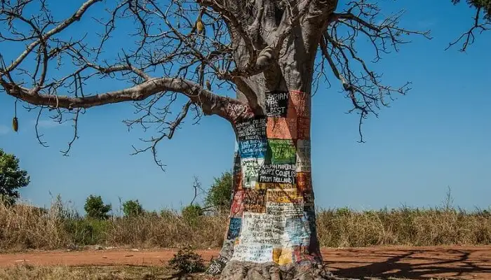
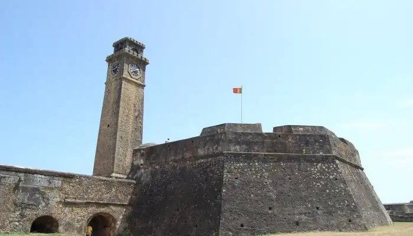
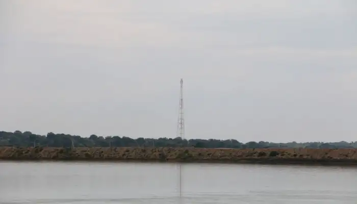

Mannar is a popular tourist destination in the island nation, Sri Lanka. It is spelled as Maṉṉār and Mannārama in Tamil and Sinhalese
languages, respectively. Being the major city of Mannar District in country's Northern Province, this area witnessed its fast urbanization
over a period of time. A tour itinerary to Sri Lanka would remain incomplete without a mention of this district in Sri Lanka and also without
including the top places to visit in Mannar. The island looks amazing, overlooking the Gulf of Mannar. This place has attained global
recognition as a pilgrimage center due to the presence of the famous Ketheeswaram Temple here. Worshippers keep flocking here throughout the
year. Being an ancient city, Mannar has a rich history. The Periplus of the Erythraean Sea in the 2nd century mentioned this area as a famous
pearl fishing center. This place appeals to all due to the abundance of baobab trees beside several ancient forts that had been built by the
Portuguese in the 1560s and were later rebuilt by the Dutch during 1658 and thereafter. Over the period of many centuries, interiors of these
forts have been largely destroyed but their ramparts and bastions still remain undamaged. History and nature lovers will truly enjoy their
time in some of the amazing places to visit in Mannar.
1. Shrine Of Our Lady Of Madhu
The Shrine of Our Lady of Madhu is a famous landmark in the Northern Province of Sri Lanka in Mannar. This Roman Catholic Marian shrine
welcomes the Christians since it was built four centuries ago. A large number of Sri Lankan Catholics and those from the remaining parts
of the world keep flocking in this shrine to worship for salvation. As the pilgrimage center is considered the holiest of all Catholic
shrines in Sri Lanka, it witnesses ample rush throughout the year. Visitors include Tamil and Sinhalese Catholics besides a large chunk
of Buddhists, Hindus, and Protestants who arrive here to spend quality time.
2. Mannar Island
Mannar Island is natures bounty in Sri Lanka. A causeway connects this island with the Sri Lankan mainland. Covered through sands and
flora, it has the total area of approximately 50 square kilometers. Tourists usually visit the interesting spots like Adam's Brclassge
limestone shoals chains that is a connecting point between Mannar, Sri Lanka with Tamil Nadus Pamban Island, also called Rameswaram
Island. Geographical findings describe that it used to be an erstwhile bridge to connect India and Sri Lanka centuries ago. White sands,
palm trees, gulls, and terns seek the attention of visitors here. Tourists enjoy exploring the fishing boats. Presence of ancient baobab
trees which were actually native to Africa and believed to have been planted by the Arab merchants here several centuries ago, keep the
visitors hooked. Travelers spend a good time exploring the ruins of the crumbling colonial edifices which Portuguese, Dutch, and British
rulers had built several centuries ago during their respective periods. Mannar used to be an affluent pearling center before LTTE hostage
leading to the cold war for many decades. Today, it is the poorest of the Sri Lankan islands but has once again started gaining prosperity.
3. The Doric At Arippu
Denoted with names like Doric Bungalow or simply The Doric at the eastern Arippu in Mannar, Sri Lanka, this monument used to serve as an
official residence of the 1st Ceylon Governor, Frederick North during colonial era. It also became one of the popular places to visit in
Mannar, Sri Lanka post countrys independence from the colonial rule. Large number of visitors come here to know about the facts related to
colonial rule when Sri Lanka was invaded by the British Empire. Architectural designs and beauty of this monument in the ancient Greek Doric
Order style appeal all visitors. It took 3 years (from 1801-1804) for the building to get completed.
4. Baobab Tree

Mannar island is usually visited by those tourists who want to have a glimpse of a truly offbeat attractionthe famous Baobab tree.
Presence of an ancient baobab tree keeps the travelers enchanted when they come to witness its glory. According to researchers, a few
Arab traders would have planted the tree more than seven centuries ago. With its nearly 20 meters circumference, this tree is more than
700 years old and remains a popular landmark in this region.
5. Mannar Fort

History lovers can find a big andmark of the past era by visiting the Mannar Fort in Sri Lanka. Renowned by the names, Mark Kai and
Mannaram Balakotuwa in Tamil and Sinhalese languages respectively, this fort is a major landmark on Mannar Island. The Portuguese built
it in 1560 during their rule. The Dutch rulers captured it and began rebuilding it in 1658 until its complete remodeling in 1696. While
Dutch surrendered before the British in 1795, this fort came under the latters rule. This uniquely designed, square-shaped fort appeals
to all tourists to explore the four bastions and its architectural beauty at its location of connecting point of mainland Sri Lanka with
Mannar Island through a bridge. The Sri Lankan Railway Authority currently occupies and looks after this fort. This is one of the best
places to visit in Mannar, Sri Lanka for those who have an inclination towards history.
6. Yoda Wewa

A Giant's Tank or Yoda Wewa in Mannar, Sri Lanka is also called Kaukkarai Kuam in Sinhalese language. Located at a distance of
mere 16 kilometers from Mannar, it is famous northern Sri Lankan irrigation tank. It has also become a popular tourist spot today. It
exists since many centuries thus remains a popular landmark in the region. As Giants Tank is easily accessible by roadways and railways,
people from all nooks and corners of Sri Lanka, especially tourists, plan their visit here. They enjoy spending good times at this
location. If youre searching for, Mannar tourist places, you know which one to pick now!
7. Adams Bridge
An important landmark with its mythological importance, Adam's Bridge is popular by the names, Rama's Bridge and Rama Setu. A symbolically
significant bridge between Sri Lankas Mannar Island and neighboring Indias Pamban Island or the famous Rameswaram Island is located far off
from southern state of Tamil Nadu mainland. It is a limestone shoals chain. Geologists proclaim that several centuries ago, it used to be a
connecting point between the two countries as a land bridge. As ancient Indian Sanskrit epic Ramayana written by Valmiki has a mention of this
very bridge, Hindu theology keeps it in great esteem. It remains a major attraction in Sri Lanka till date.
8. Thiruketheeswaram Kovil
Thiruketheeswaram Kovil Hindu shrine is also famous as Ketheeswaram Temple or Tirukktsvaram in Sri Lanka. One of the ancient Hindu
temples in Mannar area, it is always visited by the Hindu devotees. It overlooks neighboring Indias ancient Tamil port towns of Manthai
and Kudiramalai. Now in its ruins, although got restored and renovated many times over the centuries, this temple is visited by the
worshippers of Shiva deity. Due to the ancient value of this temple, it is equally visited by explorers, including Hindu devotees and
common travelers. This place surely tops the list of top places to visit in Mannar for all kinds of travelers!
9. Mannar Bird Sanctuary
Travellers visiting Mannar in Sri Lanka cant ignore the much-renowned Mannar Bird Sanctuary. This bird sanctuary is a boon in disguise for
nature & wildlife lovers to watch an amazing variety of migratory and local birds. It is a popular Bird Sanctuary cum Nature Reservoir in
Mannar which offers ample choice to spend the best time watching variety of bird species, mammals, and countless other animals. Popular
animals like Deccan avi faunal species, Crab Plover, long-tailed Shrike; Black Drongo; and Indian Courser amongst others are commonly found
here. Tourists witness a variety of wildlife animals especially in the Thalladi Pond to Periyar Kalapuwa; Mannar Causeway, and nearby areas
close to the Adams Bridge. So, make sure you dont miss out on one of the best places to visit in Mannar, Sri Lanka!